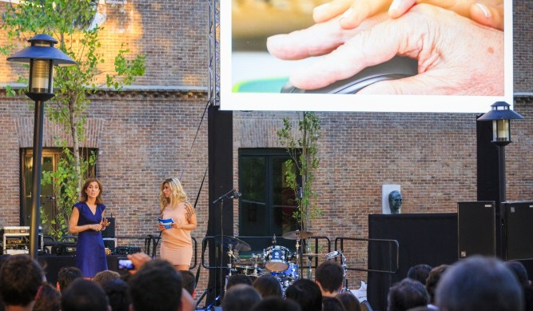

A partir de hoy, Windows 10 está disponible en 190 países a través de una actualización gratuita para aquellos usuarios con equipos con Windows 7 y Windows 8.1, así como en nuevos PCs y tabletas. Madrid ha sido una de las pocas ciudades elegidas para dar la bienvenida a Windows 10 por todo lo alto.
El nuevo Windows es una ventana que se abre para ayudar a la gente a alcanzar sus objetivos con éxito y, por esta razón, Microsoft ha organizado un evento muy especial en un lugar único: La Residencia de Estudiantes, un edificio desde cuyas ventanas se asomaron creadores, pensadores, artistas y científicos como Dalí, Buñuel, Lorca, Unamuno, Juan Ramón Jiménez o Severo Ochoa, quienes han servido de inspiración para las generaciones posteriores.
En el evento madrileño, más de 400 invitados han podido disfrutar de las novedades del nuevo Windows 10 en la zona demo habilitada para la ocasión con una gran gama de dispositivos con el nuevo sistema operativo. Microsoft se rodeó de fans y partners en una celebración que contó con la participación de Cristina Boscá, la presentadora de los 40 Principales, como maestra de ceremonias, y en la que Delafé y las Flores Azules ofrecieron un concierto muy especial.
Para leer el arículo por favor ingresar al siguiente enlace: Nuevo Windows 10
Market News
24 JUNIO
España da la bienvenida a Windows 10 15
